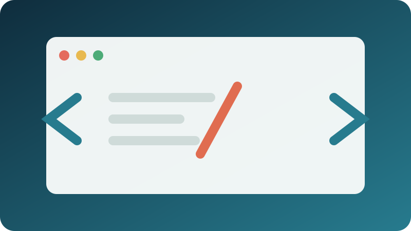
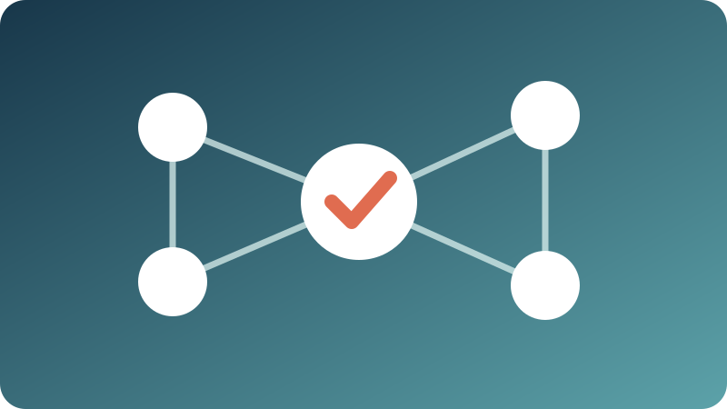
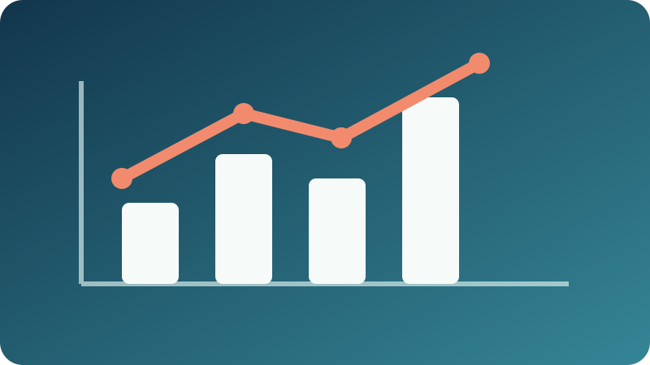
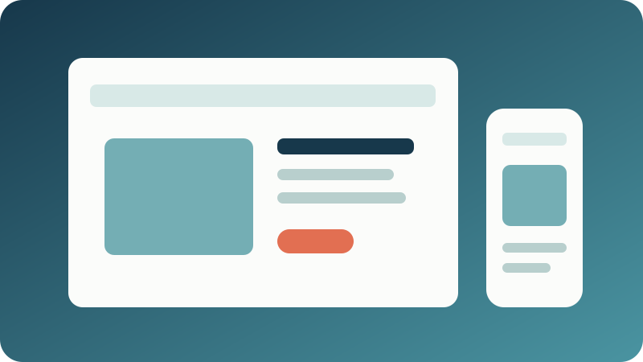
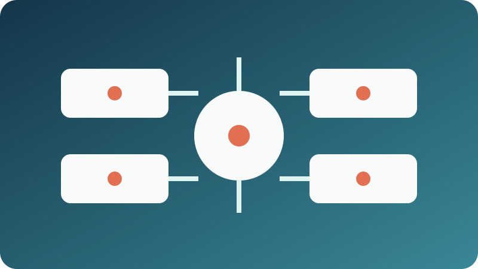

PairCode

A collaborative coding interview app with authenticated rooms, shared Monaco editing, queued Python tests, and session review.
View repository →Selected work
A mix of public repositories, independent builds, and clearly labeled engineering work from my professional experience.

A collaborative coding interview app with authenticated rooms, shared Monaco editing, queued Python tests, and session review.
View repository →
An AI workflow copilot that produces citation-backed answers using hybrid retrieval, schema validation, and a measured evaluation loop.

A production-minded ETA forecasting service with live transit and weather ingestion, Redis caching, and automated refresh jobs.

A public-facing research lab website contribution focused on presenting lab information clearly on the web.
View repository →An earlier HTML portfolio repository documenting my growth in semantic markup, responsive layout, and personal web publishing.
View repository →A public coursework repository from my data science studies, preserving analysis work and version-controlled assignments.
View repository →
Python services with schema validation and automated backfills, designed for safe re-runs and consistent versioned datasets.
Distributed traces, metrics, structured logs, and regression checks used to diagnose pipelines and improve production stability.
REST API features for a production SaaS application serving more than 10,000 users, backed by relational data and CI/CD.
Redis caching, SQL optimization, retries, health checks, and AWS deployment supporting high-traffic events with 500+ attendees.
A preprocessing and indexing pipeline for large corpora using chunking, metadata tagging, query cleanup, embeddings, and reranking.
Gold-query and regression suites for catching retrieval quality drift while iterating on prompts and ranked search behavior.